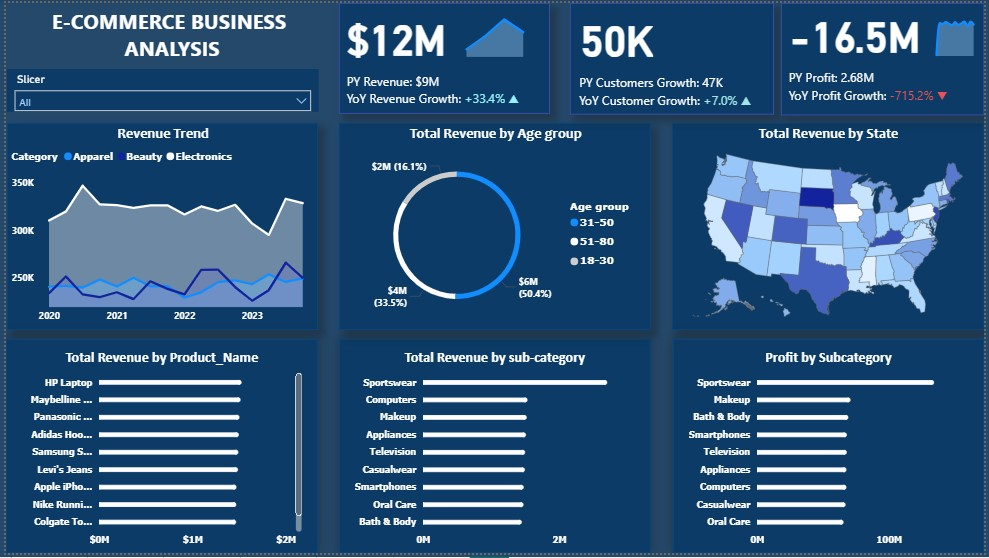
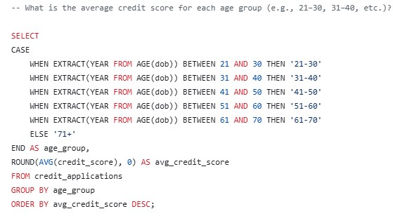
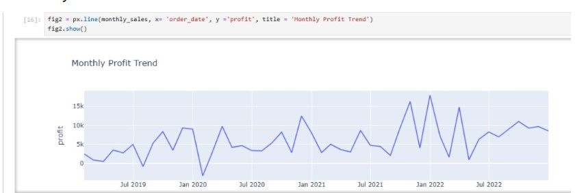
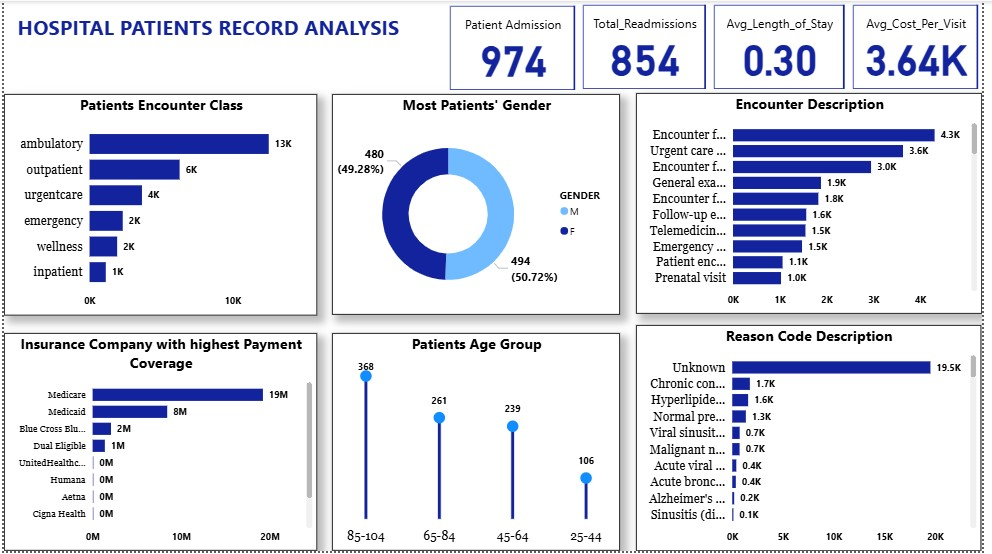
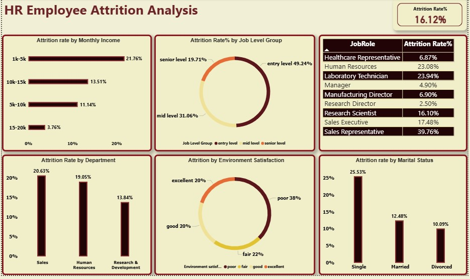

About Me
I am a data analyst with a solid foundation in data manipulation, data visualization, and business intelligence, I leverage advanced tools such as Microsoft Excel, SQL, Power BI, and Python to drive data-driven decision-making and business performance. With a background in quality control and process analysis, I excel at transforming complex datasets into clear, actionable insights that inform strategic planning and operational improvements.
Skills
Projects
E-Commerce Business Analysis using Powerbi

Analyzed E-commerce business data and uncovered trends and insights.
View ProjectCredit Risk Analysis using SQL

analyzing credit risk, loan approvals, and payment behavior.
View ProjectLogistics and Supply Chain Performance Analysis
A logistics analysis project highlighting warehouse, product, and supplier performance.
View ProjectSuperstore Data Analysis with Python

Analyzed sales data using Python libraries.
View ProjectHospital Patient Record Analysis using Powerbi

Analyzed hospital patient records for trends and insights.
View ProjectHR Attrition Analysis using Powerbi

Explored HR attrition metrics and trends using Power BI.
View ProjectCertifications
Data Analyst Certification : Link
Python for Data Analyst Certification : Link
ISO/IEC 27001 Information Security Associate Certification : Link
AWS Cloud Practitoner Essentials Certification : Link
Bachelor of Science Degree : Link
Contact Information
Email: barokaholayide@gmail.com
Phone: 07076613852
Resume: View Resume
LinkedIn: www.linkedin.com/in/yusufolaide
Github Link: https://github.com/AnalystOlaide
Medium Blog : Link